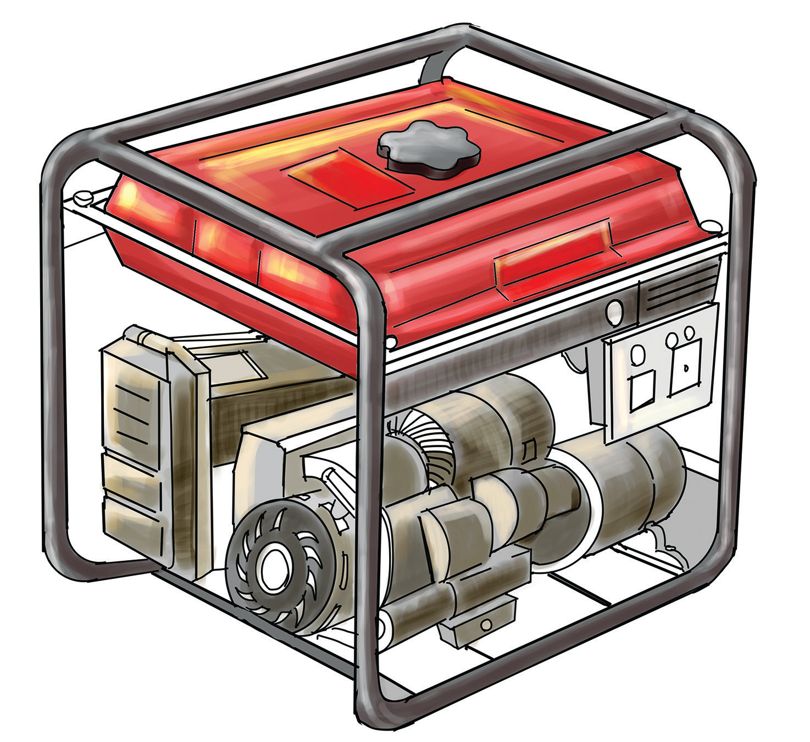

Kuzalisha umeme kwa kutumia fueli
Fueli hutoa nishati ya joto ambayo hubadilishwa na kuwa nishati ya umeme. Fueli hizo ni kama vile dizeli, petroli, makaa ya mawe na gesi asilia. Vifaa kama jenereta hutumia nishati hizo kuzalisha umeme. Kuna mitambo inayozalisha umeme mkubwa kwa kutumia dizeli. Mitambo hiyo ipo Ubungo Dar es Salaam na Dodoma. Pia, mitambo mingine ya dizeli huzalisha umeme mdogo unaotumika shuleni, zahanati, makanisani na misikitini. Kielelezo namba 14 kinaonesha jenereta linalotumia fueli kuzalisha umeme. Mitambo ya gesi asilia hupatikana Mtwara, na Kinyerezi na Ubungo mkoani Dar es Salaam.

Umeme unaozalishwa na vyanzo mbalimbali hutiririka kupitia njia maalumu. Njia hiyo imeundwa na chanzo cha umeme, waya, swichi, na kifaa kinachotumia umeme. Muunganiko wa vifaa hivi ambavyo umeme hupitia huitwa sakiti. Umeme hutiririka ikiwa sakiti imekamilika. Kama umeme hautiririki inaashiria kutokamilika kwa sakiti. Kutokamilika kwa sakiti hutokana na waya kukatika au kuzimwa kwa swichi.